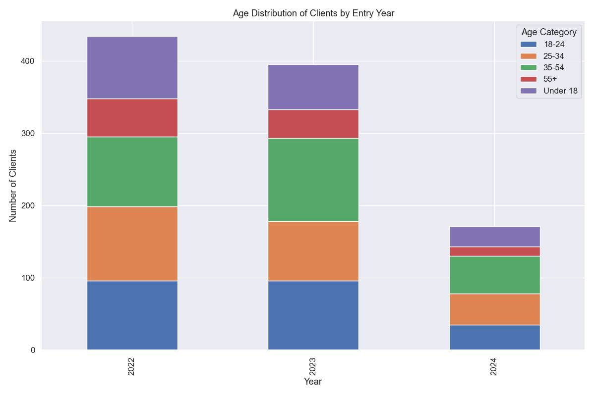

Age Distribution Trends
The chart shows how the age distribution of clients has changed over time.
Demographic Summary

This chart provides a summary of the key demographic characteristics of clients in the HMIS system.
This report provides comprehensive analysis of HMIS data from January 2022 to June 2024.
500
129
1000
10
This analysis is based on synthetic HMIS data covering the period from January 2022 to June 2024. The data includes information on 500 clients with 1000 enrollments across 10 different projects.
The following data quality issues have been identified:
The chart shows the trend in homeless program enrollments by quarter from 2022 to 2024.
This chart illustrates the distribution of enrollments across different project types over time.
The chart shows how the age distribution of clients has changed over time.
This chart provides a summary of the key demographic characteristics of clients in the HMIS system.
This chart shows the distribution of exit destinations for all clients who have exited programs.
The chart illustrates how exit destinations vary across different project types.
This chart shows the percentage of exits to permanent housing by project type.
The chart illustrates how exit destinations have changed over time.
This chart shows the distribution of prior living situations for all clients entering programs.
The chart illustrates how prior living situations vary across different project types.
This chart shows the relationship between prior living situations and exit destinations.
The chart illustrates how prior living situations have changed over time.
This chart shows the distribution of how many program enrollments clients have.
The chart illustrates the distribution of time between program enrollments for clients with multiple enrollments.
This chart shows the pattern of returns to homelessness after exits to permanent housing.
The chart illustrates how time between enrollments varies based on the exit destination of the previous enrollment.
This chart shows the trend in chronic homelessness percentages over time.
The chart compares exit destinations between chronically homeless clients and non-chronically homeless clients.
This chart shows how length of stay varies across different project types.
The chart illustrates the overall distribution of length of stay for all clients.
This chart shows how average and median length of stay has changed over time.

The chart illustrates how success rates (exits to permanent housing) correlate with length of stay.
This chart shows how permanent housing success rates vary by age group.
The chart illustrates disparities in permanent housing outcomes based on race and ethnicity.
This chart shows how permanent housing success rates vary by gender.
The chart illustrates shelter utilization rates over time by project type.
This chart compares the distribution of client needs (prior situations) with available resources (project types).
The chart highlights potential service gaps for specific populations (veterans, youth, and clients with disabilities).
This comprehensive analysis provides insights into homelessness trends, program performance, and service gaps from 2022 to 2024. The data reveals both successes and challenges in addressing homelessness in the community.
Key opportunities for improvement include:
By implementing the recommendations outlined in this report, the community can work toward more effective and equitable homeless services.
Generated on March 13, 2025